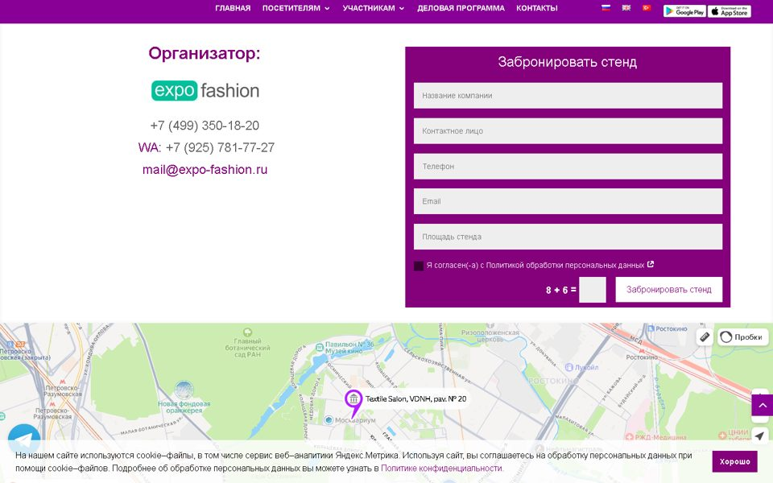
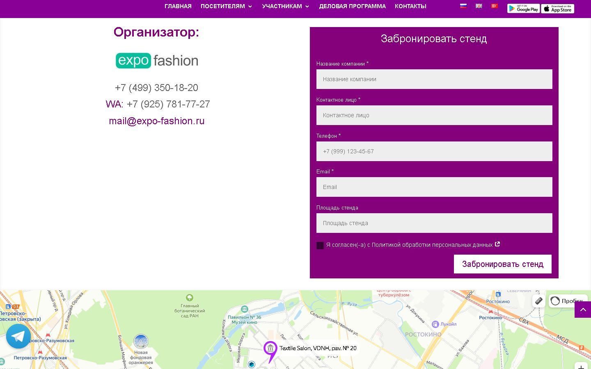
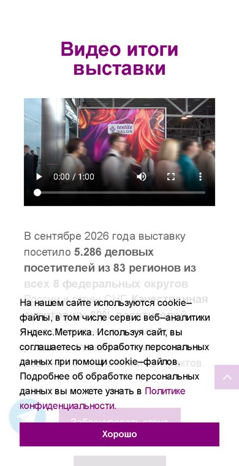
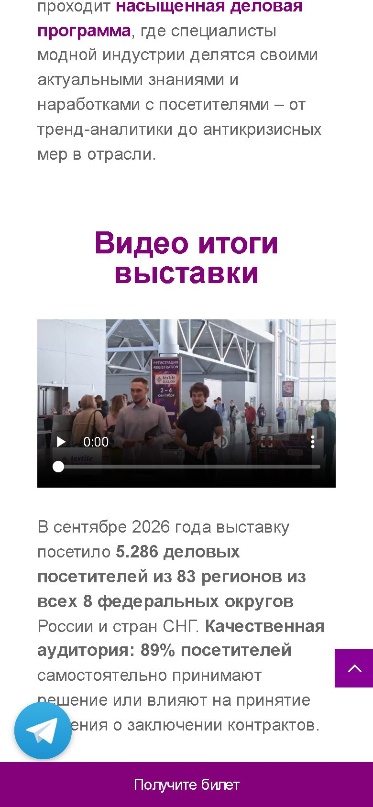
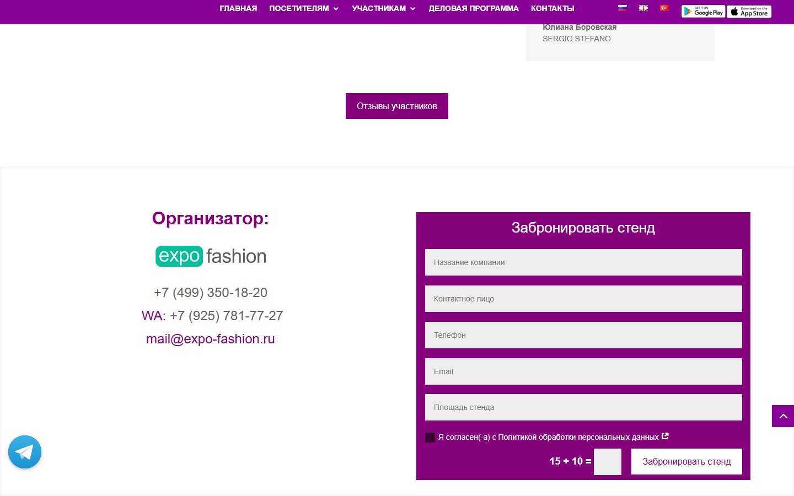
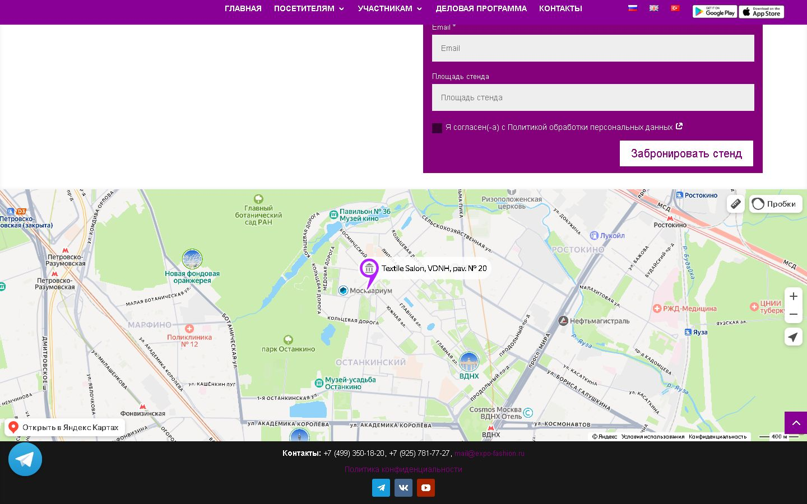

Textile Salon: главная страница до и после
Двенадцатого октября я сделал разбор главной страницы textile-salon.ru и нашёл, что мешает ей собирать заявки. Здесь — что по каждому пункту сделано, как это выглядит и что показывают замеры. Дизайн и структура сайта не менялись.
Коротко
Замеры
| Показатель (телефон) | Было, 12.10 | Стало, тот же способ | Google, 19.10 |
|---|---|---|---|
| Скорость (из 100) | 3 | 30 | 77 |
| Удобство и доступность | 76 | 91 | 91 |
| Поисковая оптимизация (SEO) | 92 | 100 | 100 |
| Появление главного блока | 17 с | 7,8 с | 5,3 с |
| «Прыжки» страницы при загрузке (норма до 0,1) | 0,84 | 0,04 | 0,045 |
| Вес страницы | 5,3 МБ | 1,6–1,9 МБ | — |
| Показатель (компьютер) | Было, 12.10 | Стало, тот же способ | Google, 19.10 |
|---|---|---|---|
| Скорость (из 100) | 42 | 67 | 96 |
| Появление главного блока | 1,3 с | 0,95 с | 1,1 с |
| «Прыжки» страницы (норма до 0,1) | 0,53 | 0 | 0 |
«Тот же способ» — Google Lighthouse в Chrome на моём компьютере, как в разборе 12 октября (середина из трёх прогонов). Этот способ строже к телефону, поэтому баллы ниже, чем у Google. «Google» — официальный сервис PageSpeed Insights, 19 октября; его можно открыть и повторить самостоятельно. Оценка немного меняется от проверки к проверке.
По пунктам разбора
1. Форма заявки
Было: телефон с «+7» и скобками форма отклоняла, подписей у полей не было, пример «8 + 6» — который роботы на самом деле обходили.
Стало: телефон в любом виде; над полями видны подписи, у обязательных — «*»; на телефоне в поле «Телефон» сразу открываются цифры. Пример убран — роботов отсеивает сам сайт, незаметно для людей. Заодно исправлена скрытая проблема: форма могла через сутки-двое начать отвечать «обновите страницу» и не отправлять заявку.


2. Видео «Итоги выставки»
Было: 40 МБ, начинало загружаться сразу при открытии страницы, вместо заставки — случайный размытый кадр.
Стало: файл сжат до 8 МБ (в 5 раз легче), загружается только по нажатию «▶», заставка — кадр со входа на выставку.


3. Скорость на телефоне
Стало: облегчены картинки (тот же вид в лёгком формате WebP), телефон сразу получает телефонный вариант баннера, карта и видео грузятся только когда нужны, с главной убраны файлы неиспользуемых галерей, фотолента подгружается после основного содержимого, страница больше не «прыгает» при загрузке. Итог — в таблице замеров выше.
4. Плашка cookie
Было: на телефоне занимала около 40% экрана и закрывала кнопки; полупрозрачная — сквозь неё просвечивал текст.
Стало: почти вдвое меньше, плотный белый фон, аккуратная кнопка «Хорошо». Текст плашки прежний.

5. Первый экран и кнопки
Плашка больше не закрывает первый экран. Кнопки «Забронировать стенд» / «Получить билет» на первом экране и единый стиль кнопок — изменение внешнего вида, в этот этап не входило; могу предложить отдельно.
6. Заголовок и «визитка» страницы
Было: главный заголовок для поисковиков — «Забронировать стенд», в превью ссылки — «Главная» и маленький логотип.
Стало: главный заголовок — название выставки с датами и местом; при пересылке ссылки в мессенджер — «Выставка тканей Textile Salon — 24–26 февраля 2027, Москва, ВДНХ» и баннер с датами. Следующий шаг по желанию — заголовки разделов и описание для поиска.
7. Картинки
Было: ни одной картинки в лёгком формате WebP, «по мере прокрутки» загружались только 8 картинок из 38, у 20 картинок не было описаний.
Стало: тяжёлые картинки — в формате WebP при том же виде; всё, что ниже первого экрана, загружается по мере прокрутки; у важных картинок и фото выставки есть описания — по ним сайт находят в поиске по картинкам. Оригиналы сохранены.
8. Сторонние сервисы
Сделано: карта загружается при подходе к ней (раньше — сразу), с главной убраны файлы неиспользуемых галерей. Не трогали: счётчики и аналитику (в том числе неработающую Amplitude) — их меняем только по вашему решению.
9. Доступность и мелочи на телефоне
Стало: страницу можно увеличить пальцами; телефоны кликабельные — нажал и звонишь (в шапке, у организатора и внизу сайта); у карты есть название. Плюс исправлена опечатка «Политика конфиденциальности» и возвращена нижняя полоса с контактами — на главной она пропадала из-за ошибки в коде карты.


10. Материалы прошлой выставки
Картинки программы и приложения сентября 2026 оставлены как есть — по вашему решению.
Найдено и исправлено сверх разбора
- Спрятанные чужие ссылки на странице «Получить билет» (часы-подделки, сайт 18+ и др.) — висели с начала 2021 года, удалены. За такие ссылки поисковики могут понижать сайт.
- Пропавшая нижняя полоса с контактами на главной — возвращена.
- Форма могла перестать отправлять заявки из-за устаревшей служебной метки в сохранённой копии страницы — исправлено.
Осталось на вашей стороне
- Проверить тестовую заявку с пометкой «ТЕСТ» (19 октября) в ящике mail@expo-fashion.ru — во «Входящих» и в «Спаме».
- Переслать текст поддержке SprintHost — исправить настройку почты домена, из-за которой Mail.ru может не доставлять письма с сайта.
- Документ согласия для галочки в форме — поставлю, как только пришлёте.